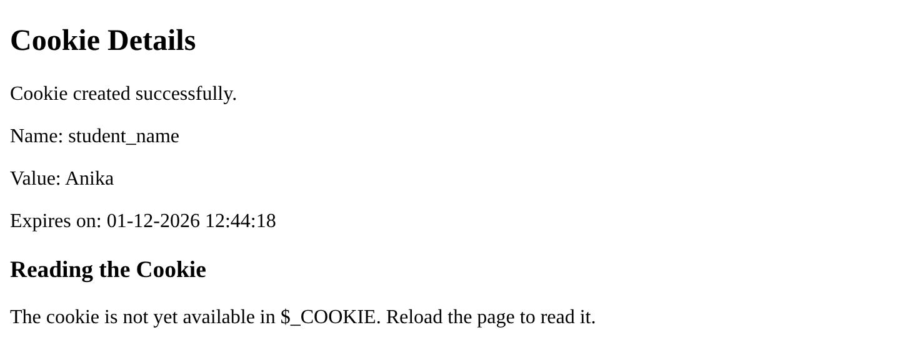

Write a PHP code to create a cookie with a name, value and expiration time.
Program 9.4: Creating a Cookie with a Name, Value, and Expiration Time
Concepts used
setcookie() before output, expiration with time(), the path /, $_COOKIE, isset(), date().
Test data: Cookie name: student_name; value: Anika; lifetime: 7 days. The page is opened once and then reloaded.
Logic
- Before any output, store the name, value and expiration time in variables and call
setcookie(). - Display the details of the cookie that has been set, including its expiration date.
- Check
$_COOKIE: if the cookie has been returned by the browser, display its value; otherwise, explain that it will be available on the next request.
Code
<?php$cookieName = "student_name";$cookieValue = "Anika";$expires = time() + 7 * 24 * 60 * 60; // seven days from now // setcookie() sends a header, so it is called before any output$created = setcookie($cookieName, $cookieValue, $expires, "/"); date_default_timezone_set("Asia/Kolkata");?><!DOCTYPE html><html lang="en"><head> <meta charset="UTF-8"> <title>Create a Cookie</title></head><body> <h2>Cookie Details</h2> <?php if ($created): ?> <p>Cookie created successfully.</p> <p>Name: <?php echo $cookieName; ?></p> <p>Value: <?php echo $cookieValue; ?></p> <p>Expires on: <?php echo date("d-m-Y H:i:s", $expires); ?></p> <?php else: ?> <p>The cookie could not be set.</p> <?php endif; ?> <h3>Reading the Cookie</h3> <?php if (isset($_COOKIE[$cookieName])): ?> <p>Value received from the browser: <?php echo htmlspecialchars($_COOKIE[$cookieName]); ?></p> <?php else: ?> <p>The cookie is not yet available in $_COOKIE. Reload the page to read it.</p> <?php endif; ?></body></html>
Output
These are real screenshots, taken by running the program with the test data.

Understanding the output
The expiration dates are samples, seven days after the moment each request was made; each reload sets the cookie again and extends its expiration. The first output shows that the cookie was set but was not available to the same request, while the second output shows that the browser returned it with the next request. The stored cookie can also be seen in the browser's developer tools, under the storage or application section, with its name, value, path and expiration date.
How it works
Setting the cookie: The name, value and expiration time are stored in variables at the top of the file. The expiration time is the current timestamp plus 604,800 seconds. setcookie() is called before any output, with the path / so that the cookie is valid for the whole local website, and its return value is stored in $created. The time zone is set so that the expiration date is displayed in Indian Standard Time.
Reading the cookie: The page displays the details of the cookie that it has asked the browser to store; date() receives the expiration timestamp as its second argument and formats that moment instead of the current time. It then checks $_COOKIE. On the first request, the browser has not yet received the cookie, so the else message is displayed. On the reload, the browser sends the cookie, and its value is displayed.
Run it yourself
Real PHP 8.3 runs inside your browser (nothing is sent to a server). Forms, links, cookies and sessions work as they do in XAMPP. The first run downloads PHP, so it needs internet and takes a few seconds.
Try this:
- Run once, then click Run again: the second request reads the cookie.
- Change the lifetime to 60 seconds:
time() + 60.
Running it in XAMPP
Save the file in C:\xampp\htdocs\phpbook\ch09, open http://localhost/phpbook/ch09/cookie-create.php, and then reload the page.
Common mistakes
- Calling
setcookie()after HTML has been sent, which produces the headers already sent warning. - Expecting
$_COOKIEto contain the new cookie on the same request. - Writing the expiration as 7 * 24 * 60 * 60 without adding
time(), which gives a moment in 1970, so the cookie is deleted at once. - Storing sensitive information, such as a password, in a cookie.